本篇教程将基于一个易语言程序“文件批量更名工具”，用火山视窗将其进行重写，以学习如何从易语言转移到火山视窗。
易语言例程：点击下载。
首先打开易语言例程，对程序进行简单分析：
当前例程只有一个窗口，如下所示：
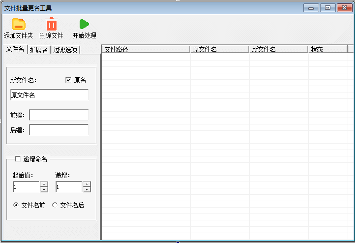
移植注意事项如下：
(1) 工具条图标组：
在易语言中图片组的使用较为简单，可以直接加入单个图片组合成图片组。
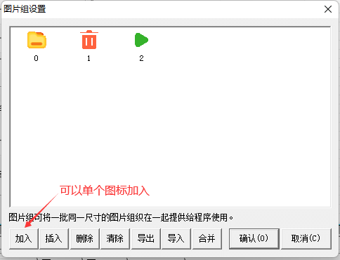
在火山视窗中需要手动将多个图片横向拼接成图片组，如下所示：
(2) 选择夹：
在易语言中选择夹可以直接在界面设计器中添加组件，在火山中则需要依赖组件布局器实现，具体可看第三章中第三节中的选择夹差异演示。
除了窗口外，额外还有窗口程序集，封装程序集和常量表，分别如下：
启动窗口程序集：
程序核心代码均在此程序集下。
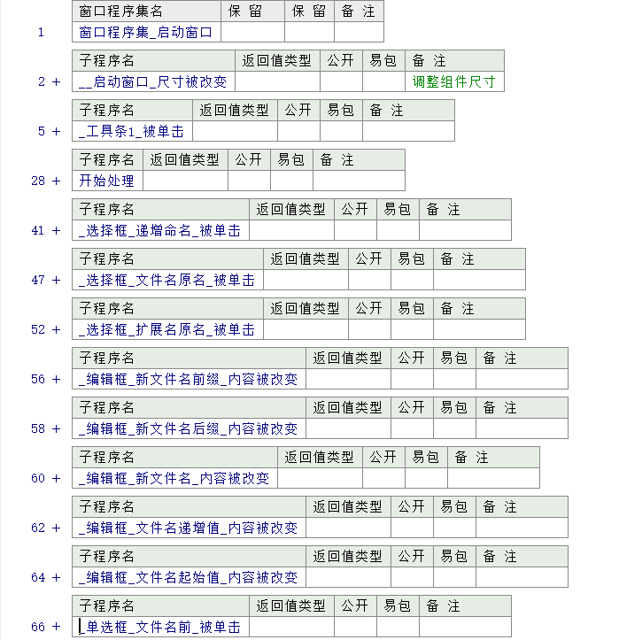
封装程序集：
存放了程序的通用子程序，以便于后期维护和扩展。
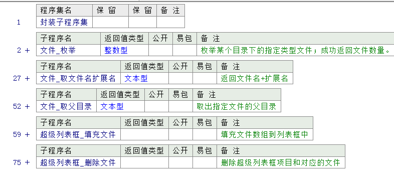
常量表：
只有三个整数常量，用于表示工具条按钮索引。
总结：
将此程序移植到火山视窗，首先需要保证在火山视窗中的命名尽量和易语言中保持一致，以便于后续的移植操作；其次可以优先考虑移植常量表，因为其内容较少；然后移植封装程序集，最后移植界面编写窗口代码。
点击“文件->新建->项目”菜单，创建一个MFC窗口程序。
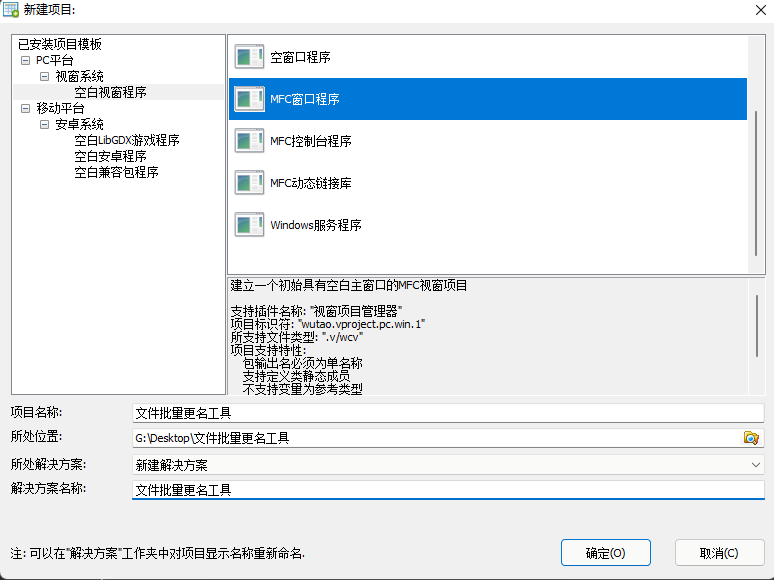
创建后注意窗口的标题属性问题，其属性默认位于变量中：
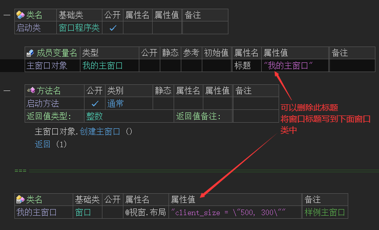
易语言常量表内容如下：
在火山中可以新建一个类来存放，如下所示：
可以选择将类名起名为“工具条常量”，这样就不需要给常量名增加“工具条按钮_”这样的标记头。
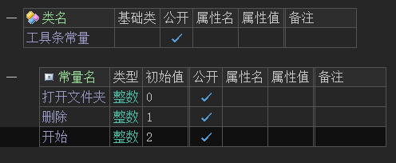
5.1 “文件_枚举”移植
易语言代码如下：
解析：主要利用“寻找文件()”方法，将某个文件夹下的指定后缀的文件全部枚举出来，放到文本数组中。
移植注意事项：
(1) 文本型数组在火山视窗中需要使用文本数组类。
(2) “寻找文件()”方法，对应火山视窗中的“文件查找类”。
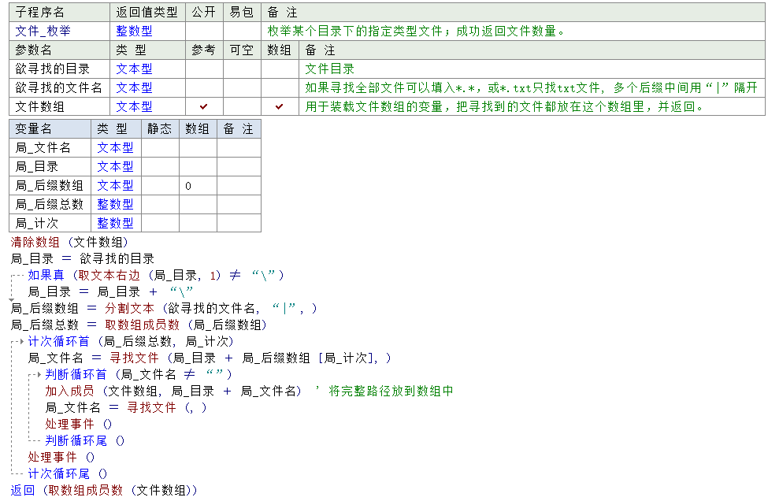
在火山移植后代码如下：
代码编写逻辑和易语言基本一致，只是个别方法使用有所差异。
(1) 新建一个封装类来存放所有的封装代码。
(2) 文本型数组使用文本数组类代替。
(3) 取文本右边判断路径的方法可以使用是否以文本结束方法代替。
(4) 寻找文件方法用文件查找类代替，需要定义变量才可以使用。
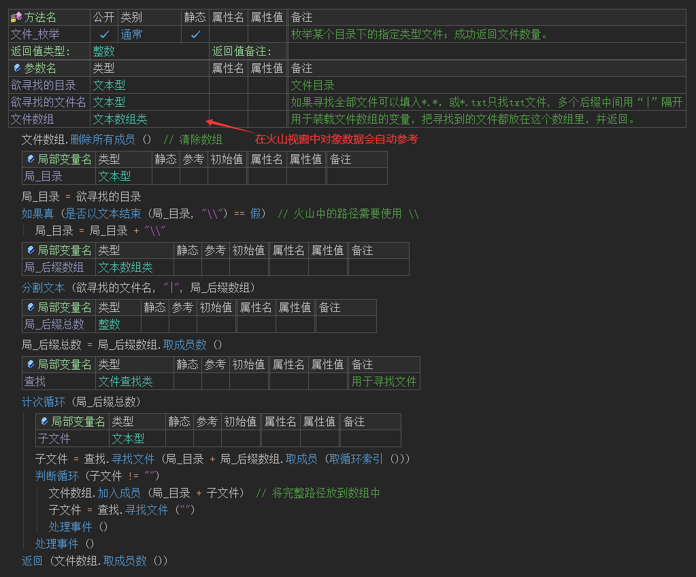
5.2 “文件_取文件名扩展名”移植
易语言代码如下：
解析：利用文本操作相关命令实现取出一个文件路径中的文件名和扩展名。
移植注意事项：
(1) 文本型数组需要使用文本数组类代替。
(2) 参数可空属性，在火山中使用@默认值代替。
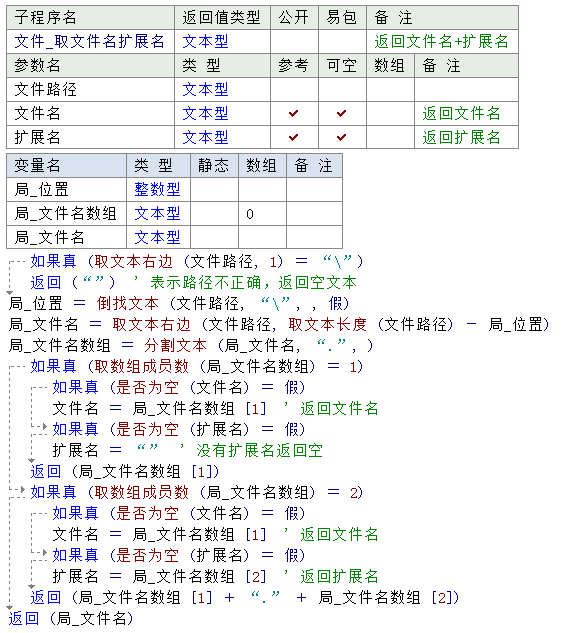
火山代码如下：
在火山中因提供了“取文件名无路径部分()”现成的方法可以直接取路径文件名，因此移植时可以省去复杂的路径判断。
几行代码即可实现易语言中同样的功能，如下所示：
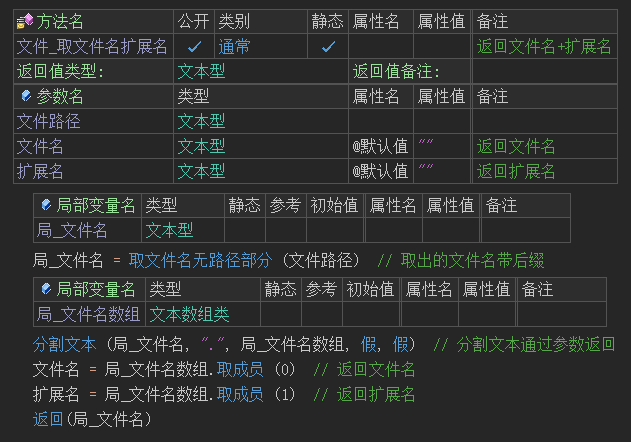
5.3 “文件_取父目录”移植
易语言代码如下：
解析：利用文本操作相关命令实现取出一个文件路径中的父目录。
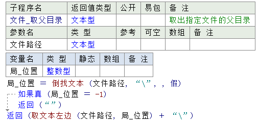
火山如下：
在火山视窗中因提供了“取文件名路径 ()”方法，用来获取文件父目录，因此无需额外封装。
其方法帮助页如下：
5.4 “超级列表框_填充文件”移植
易语言代码如下：
解析：利用循环方法将文件路径数组中的内容填充到超级列表框组件上。
移植注意事项：
文本型数组需要使用文本数组类代替。
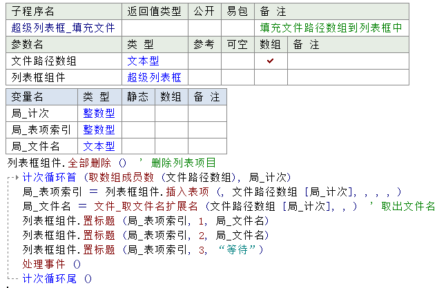
火山代码如下：
代码编写逻辑和易语言基本一致，只是个别方法使用有所差异。
(1) 因使用了文本数组类，所以在火山视窗中可利用“文件路径数组.枚举循环 () ”直接进入循环。
(2) 利用“文件路径数组.取枚举值 ()”即可代替“文件路径数组 [局_计次]”取出成员内容。
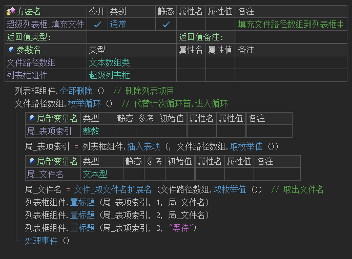
5.5 “超级列表框_删除文件”移植
易语言代码如下：
解析：利用循环方法来逆向删除超级列表框中被选中的项目，包括其对应文件一同删除。
移植注意事项：
整数型数组需要使用整数数组类代替。
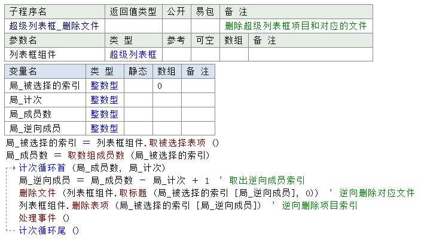
火山代码如下：
代码编写逻辑和易语言基本一致，只是个别方法使用有所差异。
(1) “取被选择表项()”方法是通过参数返回被选择的项目索引。
(2) 因在易语言中需要逆向循环，火山视窗中提供了现成的“逆向计次循环”，可用于逆向循环。
(3) “局_被选择的索引.取成员 (取循环索引 ()”可代替易语言中的“局_被选择的索引 [局_逆向成员]”用于表项索引。
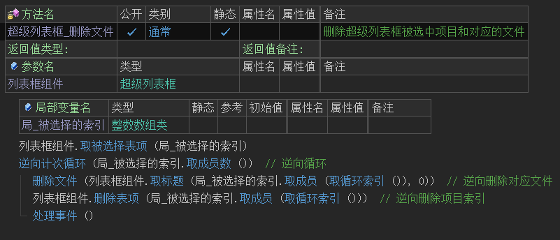
6.1 易语言“_启动窗口”分析：
_启动窗口中共有以下几种组件：
(1) 工具条
(2) 选择夹
(3) 分组框
(4) 单选框
(5) 选择框
(6) 编辑框
(7) 超级列表框
(8) 标签
6.2 主窗口属性设置
易语言窗口主要属性如下：
(1) 标题：用于设置窗口标题；
(2) 边框：让窗口具备可调节属性；
(3) 控制按钮：让窗口最大化最小化按钮可正常使用。
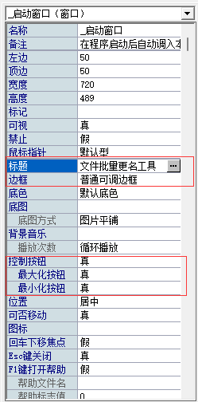
将易语言“_启动窗口”中的主要属性在火山视窗“我的主窗口”中复现出来。
注：其中“控制按钮”和“最小化”按钮属性默认为真，无需设置。
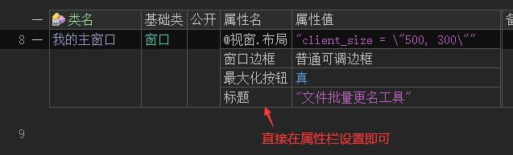
最终效果如下，窗口将具备可调节属性：
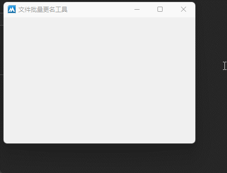
6.3 工具条设计
6.3.1 工具条属性设置
易语言相关属性如下，主要是“位置”和“图片组”属性。
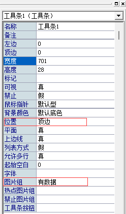
在火山视窗窗口设计器中，将工具条属性复现出来：
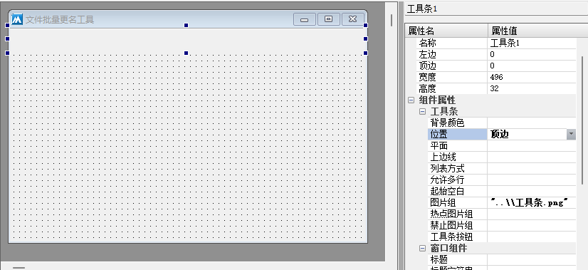
6.3.2 工具条按钮设置
易语言设置：
在易语言中需要在设计器中右键“工具条”选择“设置工具条按钮”菜单，进行设置：
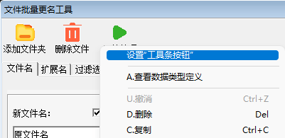
其工具条按钮设置界面效果如下：
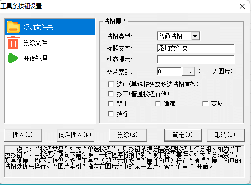
火山设置：
在火山中通过“工具条按钮”属性进行设置：
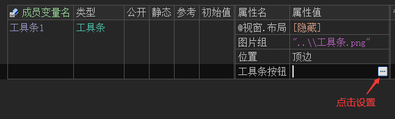
其设置界面效果如下，使用方式也易语言基本一致：
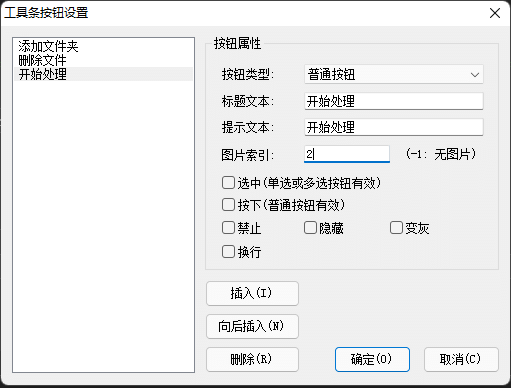
设置完毕后效果如下：
6.4 选择夹设计
6.4.1 概述
在易语言中，支持直接在界面设计器中对选择夹的内容进行实时设计，如下所示：
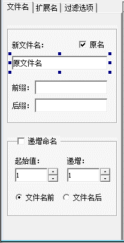
在火山中则需要使用“组件布局器”实现，具体可看部分组件差异教程。
6.4.2 子夹设计
文件名子夹设计：
易语言文件名子夹内容，使用到的组件分别如下：
(1) 标签
(2) 分组框
(3) 单选框
(4) 编辑框
(5) 选择框
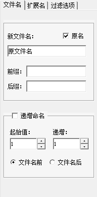
按照易语言中所提供的组件，在火山视窗组件布局器中将其完整的复现出来，最终效果如下：
注：组件名字的设置尽量也和易语言中保持一致，以便于后续代码编写。
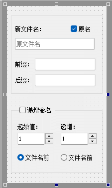
设计完毕后代码如下，注意公开当前类和部分组件，以便于后续访问。
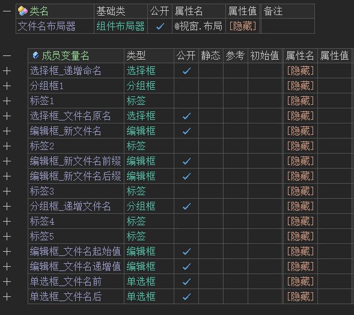
扩展名子夹设计：
易语言扩展名子夹内容，使用到的组件分别如下：
(1) 标签
(2) 选择框
(3) 编辑框
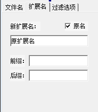
按照易语言中所提供的组件，在火山视窗组件布局器中将其完整的复现出来，最终效果如下：
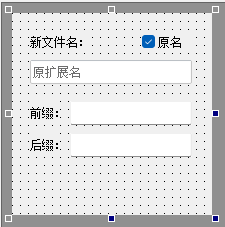
设计完毕后代码如下，注意公开类和部分组件，以便于后续访问。
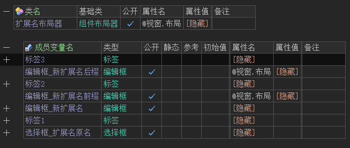
过滤选项子夹设计：
易语言过滤选项子夹内容，使用到的组件分别如下：
(1) 标签
(2) 编辑框
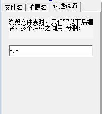
按照易语言中所提供的组件，在火山视窗中将其完整的复现出来，最终效果如下：
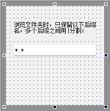
设计完毕后代码如下，注意公开当前类和部分组件，以便于后续访问。
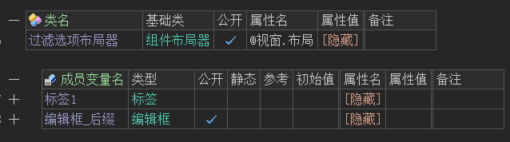
6.4.3 选择夹设计与显示
(1) 打开主窗口设计器，将选择夹组件放到设计器的合适位置。
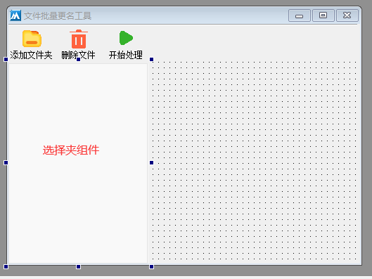
(2) 定义布局器变量，用于存储布局内容，以便于后续的代码编写。
(3) 调用选择夹的“添加子夹()”方法，动态添加子夹。
(4) 调用选择夹的“取子夹内容组件()”取出子夹内容。
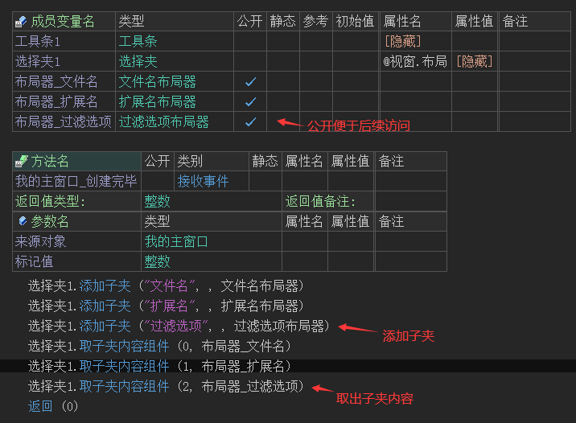
运行效果如下：
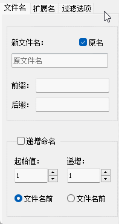
6.5 超级列表框设计
6.5.1 组件基本设置
易语言超级列表属性如下：
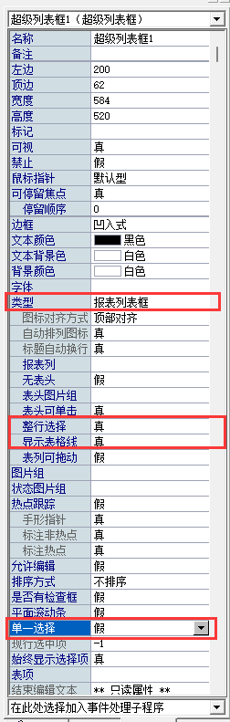
打开视窗界面设计器，并将超级列表框组件放到合适位置，同时设置相关属性：
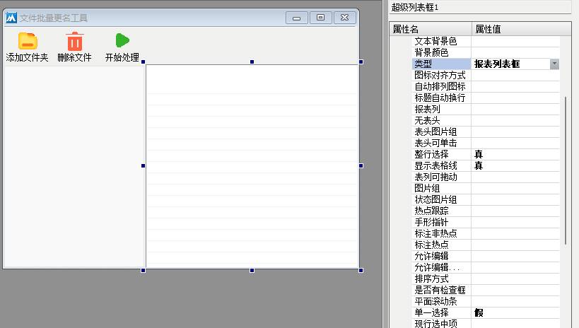
6.5.2 组件报表列设置
在易语言中可右键组件选择“设置报表列”进行设置。
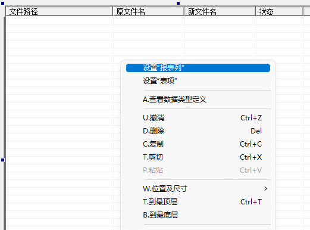
其界面效果如下：
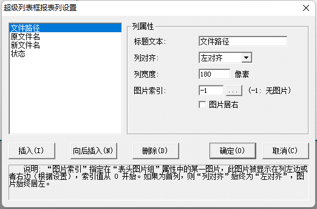
在火山中可通过“报表列”属性设置。
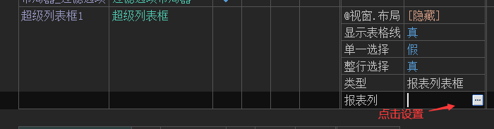
将易语言中设置的报表列信息，在火山视窗中完整的复现出来。
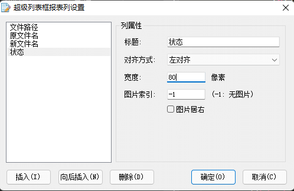
运行效果如下：
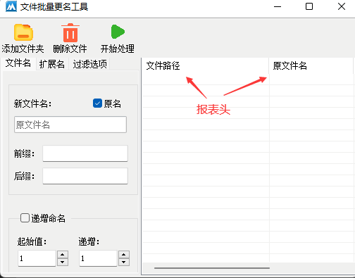
6.6 窗口尺寸动态调整
至此主窗口所有组件全部放置完毕，但是还有一个问题。
在易语言中软件运行后，窗口内的组件也会跟随窗口的改变而改变。
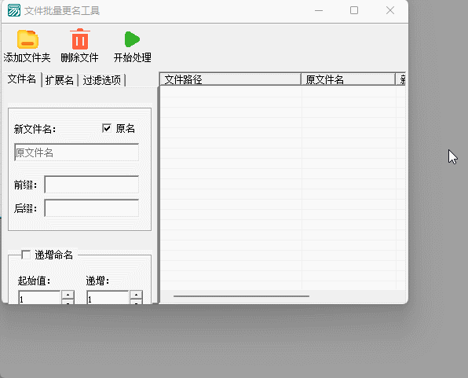
而在火山视窗中，调整窗口并不会有这样的效果。
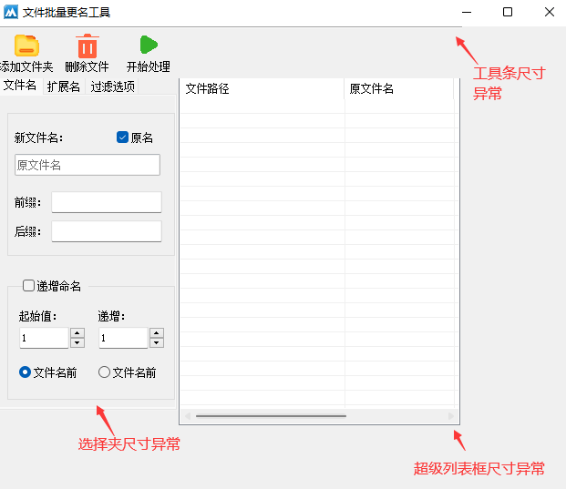
因此需要查看易语言中“__启动窗口_尺寸被改变”事件中的代码，将代码在火山视窗中复现出来。
易语言代码如下：
在易语言中只需要调整选择夹和超级列表框。
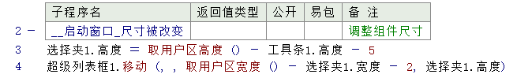
火山视窗代码实现：
(1) 调整工具条的宽度为用户区宽度。
(2) 在调整选择夹高度时，无需和易语言中一致，根据实际运行效果来决定是否减去一些尺寸。
(3) 调整超级列表框组件尺寸时，也可以根据实际需求来决定是否减去一些尺寸。
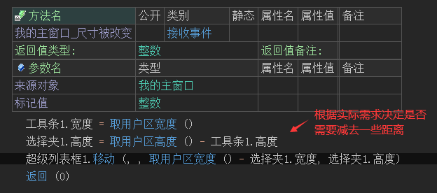
运行效果如下，至此主窗口全部设计完毕。
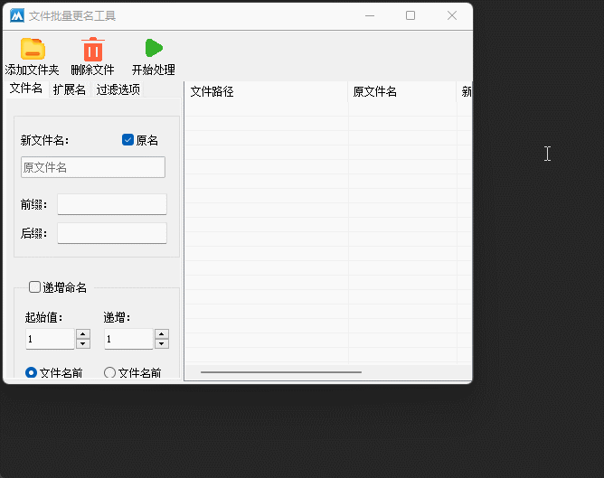
7.1 “_工具条1_被单击”移植：
易语言事件添加：
需要通过属性栏下方的“组合框”添加。
火山事件添加：
易语言事件代码如下：
移植到火山视窗时，注意事项如下：
(1) 火山中多了一个“来源对象”判断，当存在多个工具条时，用于判断哪个工具条被单击。
(2) 火山中的常量访问不需要输入#号。
(3) 易语言中的“文本型数组”，在火山中需要使用“文本数组类”。
(4) “超级列表框1.取被选择表项 ()”方法在火山中需要通过参数返回，并且需要使用“整数数组类”来代替“整数型数组”。
(5) 信息框方法在火山中不需要提供父窗口，当前所处的窗口即信息框的父窗口。
(6) 信息框的返回值为“返回按钮类型”的常量类，并非整数值。
运行效果演示：
添加文件夹演示：
删除演示：
注：按下ctrl键可以进行多选。
7.2 “开始处理”移植：
易语言代码如下：
移植到火山视窗时，注意事项如下：
(1) 火山中的“取启动时间()”方法返回的为长整数。
(2) 火山中的“计次循环”等于易语言中的“计次循环首/尾”。
(3) 在火山中无需定义计次变量，利用“取循环索引()”方法可代替易语言中的“局_计次”。
(4) 在火山中循环索引从0开始，因此在调用“置/取标题()”方法时，无需进行-1。
(5) 火山中提供了“取文件名路径()”方法可以直接取出指定文件的父目录。
7.3 “选择框”被单击事件移植：
易语言事件添加：
在易语言中通过属性栏下方的组合框添加事件。
易语言事件代码：
在易语言中共有三个选择框事件，分别如下，每个事件都是独立存在的。
火山视窗中复现此代码较为复杂，因为火山的选择夹必须依赖组件布局器才可以创建。
为了便于后续的维护管理，首先需要将组件布局器中选择框的事件挂接到窗口中执行。
操作步骤如下：
(1) 挂接事件
在窗口被创建完毕后，调用“挂接事件()”方法将组件布局器中选择框的事件进行挂接到窗口中操作。
(2) 添加事件
在主窗口中定义一个临时的选择框变量，进行事件添加，添加后将其变量删除即可。
(3) 添加事件后
利用“如果否则”语句，判断选择框点击来源。
移植到火山视窗时，注意事项如下：
(1) 在事件中可使用“来源对象”参数代替当前操作的选择框。
(2) 直接调用“选择框_被单击()”事件方法传递组件参数和标记，即可代替易语言中实现在其它选择框单击事件下处理此选择框组件被单击。
也就是“选择框_被单击 (布局器_文件名.选择框_递增命名, 0) ”代替了“_选择框_递增命名_被单击 () ”。
运行效果如下：
7.4 “预览”移植：
易语言代码如下：
本方法主要用于将文件新名称实时预览到超级列表框中。
移植到火山视窗时，注意事项如下：
(1) 文本型数组需要使用文本数组类代替。
(2) 因使用了文本数组类，可直接利用数组对象的“枚举循环()”方法，进行循环。
(3) 因考虑到火山视窗中需要通过布局器变量来访问编辑框的内容，可以提前将编辑框的内容取出赋值给文本型变量。在后续的代码编写中，直接使用变量即可访问内容，可以提高代码阅读体验。
(4) 调用数组变量的“取枚举值()”方法可代替易语言中“局_文件名数组 [局_计次]”数组的访问。
(5) 易语言中“到整数()”方法中，在火山视窗需要使用“文本到整数()”代替。
(6) 调用数组变量的“取枚举索引()”方法可代替易语言中“局_计次”变量。
(7) 因火山中的循环索引都是从0开始，因此调用列表框“置标题()”方法时，无需对“取枚举索引()”方法进行-1操作。
7.5 “取列表框所有文件名”移植：
易语言代码如下：
本方法主要用于将列表框中显示的所有文件路径加入到文本数组中，以便于新文件名预览。
移植到火山视窗时，注意事项如下：
文本型数组需要使用文本数组类代替，且会自动参考。
7.6 剩余所有组件事件移植：
易语言代码如下：
主要用于实时预览新文件名结果。
因考虑到这些组件都在组件布局器中，如果全部挂接事件到窗口中操作，反而过于复杂。
可以采取以下方式移植：
(1) 公开启动类中的主窗口对象变量，同时公开我的主窗口中预览方法。
(2) 在“文件名布局器”中，随便选择一个编辑框组件，添加其“内容被改变”事件。
(3) 添加事件后会自动生成来源对象的判断，将其删掉后通过“取程序()”方法，访问到启动类后，继续访问主窗口对象，通过主窗口对象访问“预览()”方法。
为什么要删掉自动生成的“来源对象”的判断？
这是因为，在当前类中所有的编辑框组件都需要内容被改变事件，并且都是调用预览方法，因此不需要单独去判断来源对象参数。
(4) 同样的方法在“文件名布局器”中，添加单选框被单击事件，并调用“预览()”方法。
(5) 在“扩展名布局器”中，添加编辑框内容被改变事件并调用“预览()”方法。
实时预览：
改名效果预览：